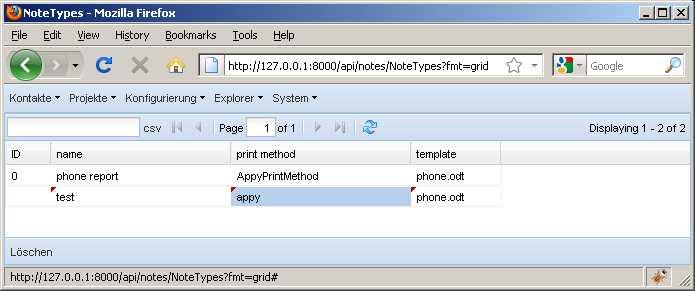

20100707¶
Also wie gestern festgestellt, schickt Lino.grid_afteredit_handler() die Werte der ComboBoxen nicht richtig ab.
Auch stelle ich mir die Frage, ob es nicht besser ist, erst beim Verlassen des Records abzuschicken.
Fallbeispiel: ich gehe nach http://127.0.0.1:8000/api/notes/NoteTypes?fmt=grid und fülle dort die drei Felder einer neuen Notizart aus:
Nach jedem Feld schickt er ein POST ab, das der Server bei den ersten beiden Feldern korrekterweise mit einer Fehlermeldung beantwortet, weil die Felder print_method und template nicht ausgefüllt sind.
Beim dritten Mal müsste er eigentlich speichern... tut er aber nicht. Und zwar, weil mit den Werten der ComboBoxen etwas nicht stimmt. Hier die Werte, die er beim dritten POST abschickt:
| id | |
| name | test |
| print_method | appy |
| print_methodHidden | |
| template | phone.odt |
Das ist nicht normal. (1) Wieso gibt es kein templateHidden? Und (2) wieso ist print_methodHidden leer? Und (3) wieso wird im Feld print_method “appy” (also die value) angezeigt, nachdem ich doch “AppyPrintMethod” (den text) ausgewählt habe? Drei Probleme auf einmal!
print_method und template sind in der site.js wie folgt definiert:
var NoteType_print_method_field = new Lino.ChoicesFieldElement({
allowBlank: false, fieldLabel: "print method", name: "print_method",
store: [ [ "pisa", "PisaPrintMethod" ], [ "appy", "AppyPrintMethod" ],
[ "rtf", "RtfPrintMethod" ], [ "picture", "PicturePrintMethod" ] ],
hiddenName: "print_methodHidden" });
var NoteType_template_field = new Lino.RemoteComboFieldElement({
allowBlank: false, fieldLabel: "template", name: "template",
store: new Lino.RemoteComboStore({ proxy: new Ext.data.HttpProxy({
url: "/choices/notes/NoteTypes/template", method: "GET" }) }),
hiddenName: "templateHidden" });
Das sieht richtig aus, und die restlichen Parameter der ComboBoxen sind
ja in der lino.js definiert:
Lino.ComboBox = Ext.extend(Ext.form.ComboBox,{
triggerAction: 'all',
submitValue: true,
displayField: 'text', // ext_requests.CHOICES_TEXT_FIELD
valueField: 'value' // ext_requests.CHOICES_VALUE_FIELD
});
Lino.ChoicesFieldElement = Ext.extend(Lino.ComboBox,{
mode: 'local',
forceSelection: false
});
Lino.RemoteComboStore = Ext.extend(Ext.data.JsonStore,{
constructor: function(config){
Lino.RemoteComboStore.superclass.constructor.call(this, Ext.apply(config, {
totalProperty: 'count',
root: 'rows',
id: 'value', // ext_requests.CHOICES_VALUE_FIELD
fields: ['value','text'], // ext_requests.CHOICES_VALUE_FIELD, // ext_requests.CHOICES_TEXT_FIELD
listeners: { exception: Lino.on_store_exception }
}));
}
});
Lino.RemoteComboFieldElement = Ext.extend(Lino.ComboBox,{
mode: 'remote',
minChars: 2, // default 4 is to much
queryDelay: 300, // default 500 is maybe slow
queryParam: 'query', // ext_requests.URL_PARAM_FILTER)
typeAhead: true,
selectOnFocus: true, // select any existing text in the field immediately on focus.
resizable: true
});
Upps: displayField und valueField darf ich nur für Lino.RemoteComboFieldElement (nicht für Lino.ChoicesFieldElement) setzen, denn (Auszüge aus der ExtJS-Dokumetantion):
- valueField : The underlying data value name to bind to this ComboBox (defaults to [...] ‘field2’ if [...] the field name is autogenerated based on the store configuration).
- For a multi-dimensional array, the value in index 0 of each item will be assumed to be the combo valueField, while the value at index 1 is assumed to be the combo displayField.
Aber das löst keine der drei Probleme...
Auch die (dynamische) Auswahlliste für template wird mit http://127.0.0.1:8000/choices/notes/NoteTypes/template?print_method=appy korrekt angefragt, und auch die Antwort des Servers darauf ist korrekt:
{ count: 3,
rows: [
{ text: "contacts.Person.odt", value: "contacts.Person.odt" },
{ text: "phone.odt", value: "phone.odt" },
{ text: "test\\phone.odt", value: "test\\phone.odt" }
],
title: "Choices for template"
}
Liegt es etwa daran, dass Lino.GridPanel mein ComboBox.setValue() ohne den zweiten Parameter record aufruft? Nein, das funktioniert.
Am Ende von meiner ComboBox.setValue() war ein this.value = v;.
Wenn ich es rauskommentiere, ist immerhin Problem (3) gelöst.
Aber es sieht aus als ob das hiddenField einer ComboBox nie in den Record gespeichert wird. Kann es sein, dass dieser Mechanismus nur im Falle einer Form funktioniert? Ja, sieht aus als das ein wichtiger Unterschied zwischen Form und Grid ist: Forms arbeiten ohne Record. Auch ein RowEditor-Grid ändert da nichts dran.
EditorGridPanel.onEditComplete(ed, value, startValue) schickt die value zunächst
durch this.postEditValue(value, startValue, r, field) und dann
durchs validateedit-Event, und ruft dann
Record.set(field, e.value);
Tilt: im columnModel muss der dataIndex von ComboBoxen aufs Hidden-Field zeigen!
Dann macht auch endlich die Bemerkung “If using a ComboBox in an Editor Grid a renderer will be needed to show the displayField when the editor is not active.” aus der ExtJS-Doku Sinn!
Diese Änderung wird vielleicht noch Nebenwirkungen haben, aber das ist die richtige Richtung.
Der besagte Renderer für die GridColumns war nicht schwer und ist auch nicht sehr teuer:
Lino.comboRenderer = function(displayField){
return function(value,metadata,record,ri,ci,store){
if (record) return record.get(displayField)
return '';
}
}
Dieser Renderer verlässt sich darauf, dass der von Lino erzeugte Record für alle Combobox-Felder immer zwei Felder hat: value und text.
Jetzt habe ich noch das Problem, dass ComboStoreField.get_value_text() für NoteType.template noch nicht funktioniert. Das ist nämlich non-FK field mit chooser. Dass dieser Fall nicht funktionierte, war bisher noch nicht aufgefallen.
Übrigens ist NoteType.template außerdem ein Feld mit eindimensionaler Auswahlliste, also keine “value,text”-Paare, sondern lediglich eine Liste von Dateienamen, die auch als solche angezeigt werden.
Also jedenfalls darf es nicht so sein, dass der Server pro NoteType`jedesmal deren `template_choices aufruft, nur um festzustellen, dass das ein eindimensionales Array ist und die Liste deshalb gar nicht nötig war.
Diese Details müssen jetzt wohl bis morgen warten, denn es ist seit langem Feierabend...
(Fortsetzung folgt morgen)

{kind=link}